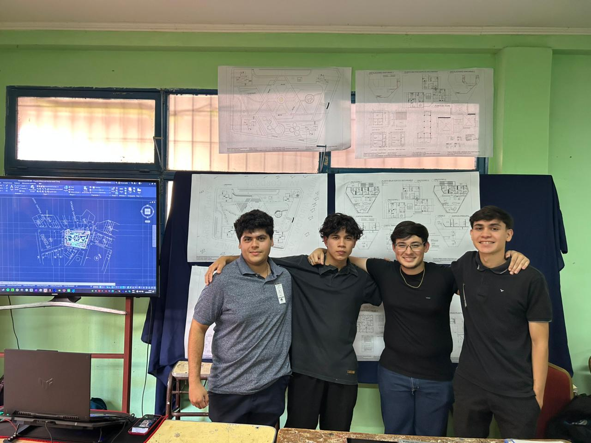

Intervención Urbana & Complejo Social "Barrio Andrés Gaspar Giai"
EPET N° 4 — 2024Máster plan ejecutivo de urbanismo y arquitectura bioclimática diseñado para la ciudad de Puerto Iguazú. Proyecto estructurado sobre morfología hexagonal con optimización espacial, patios hídricos y terrazas transitables.
Superficie 30.500 m²
Presupuesto $53.805.667,23 ARS
Equipo A/B Group


